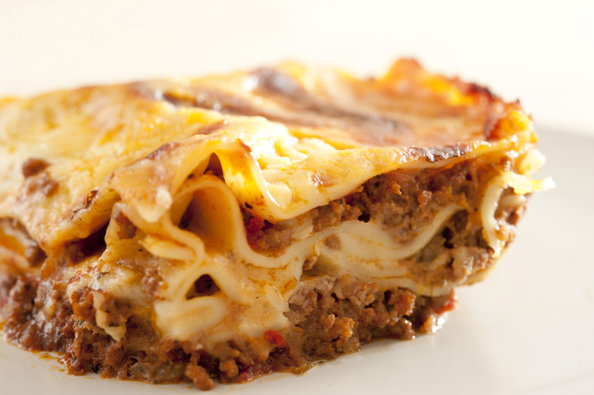

Lasagna's Recipes

The image shows a freshly baked lasagna, golden on top and slightly crispy around the edges. The layers are clearly visible on the sides: egg pasta sheets, rich meat sauce, and creamy béchamel alternating neatly. On top, the melted cheese forms an inviting crust, with small browned bubbles that suggest an intense, comforting aroma. The dish is served hot, with a firm yet soft texture when sliced.
The recipe for lasagna is based on the balance of a few rich and complementary elements. Thin sheets of egg pasta form the structure of the dish, separating layers of a slow-cooked meat sauce and a smooth béchamel. The meat sauce is deep and savory, built on the natural sweetness of vegetables and the richness of meat and tomatoes, while the béchamel adds creaminess and softness, preventing the dish from becoming dry.
Together, these components create a dish that is hearty yet harmonious. The grated cheese melts and binds the layers, adding a salty, nutty note and forming a golden crust on top. The final result is a lasagna with defined layers, a tender interior, and a lightly crisp surface, offering a combination of textures and flavors that make it a classic comfort food.
Ingredients
- Egg lasagna sheets (fresh or dried)
- Minced meat (beef or a beef–pork mix)
- Tomato purée or crushed tomatoes
- Onion
- Carrot
- Celery
- Extra virgin olive oil
- Red wine (optional)
- Milk
- Butter
- All-purpose flour
- Parmesan cheese (grated)
- Salt
- Black pepper
- Nutmeg
Steps
- Prepare the meat sauce: Finely chop onion, carrot, and celery and sauté them in olive oil until soft. Add the minced meat and cook until browned. Pour in some red wine (optional) and let it evaporate, then add tomato purée. Simmer on low heat for at least an hour until thick and flavorful. Season with salt and pepper.
- Prepare the béchamel: Melt butter in a saucepan, stir in flour to make a roux, then gradually whisk in warm milk until smooth. Season with a pinch of salt and nutmeg.
- Assemble the lasagna: In a baking dish, layer pasta sheets, meat sauce, béchamel, and a sprinkle of grated Parmesan. Repeat the layers until the dish is filled, finishing with béchamel and cheese on top.
- Bake: Cook in a preheated oven at 180°C (350°F) for 35–40 minutes, until the top is golden and bubbling.
- Rest and serve: Let the lasagna rest for a few minutes before slicing, so the layers hold together. Serve hot.
Home